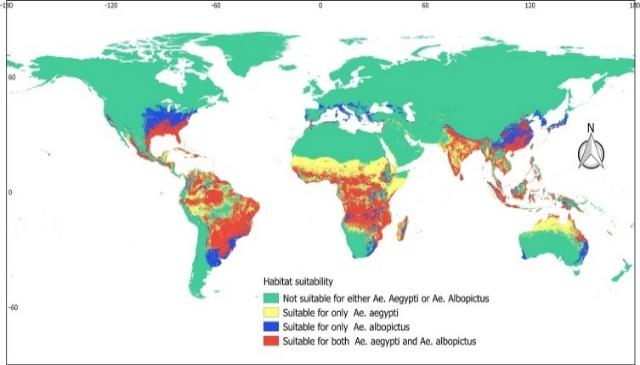
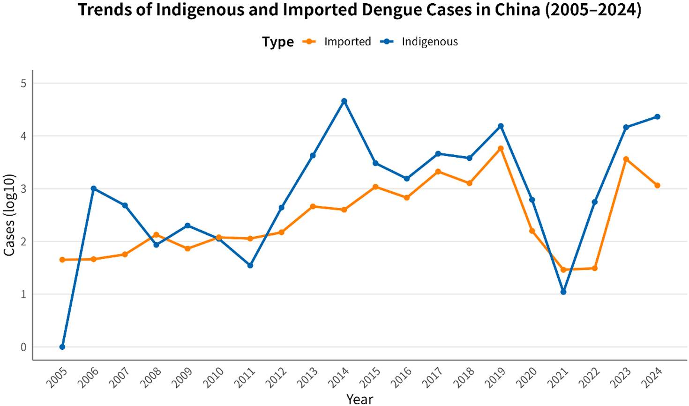
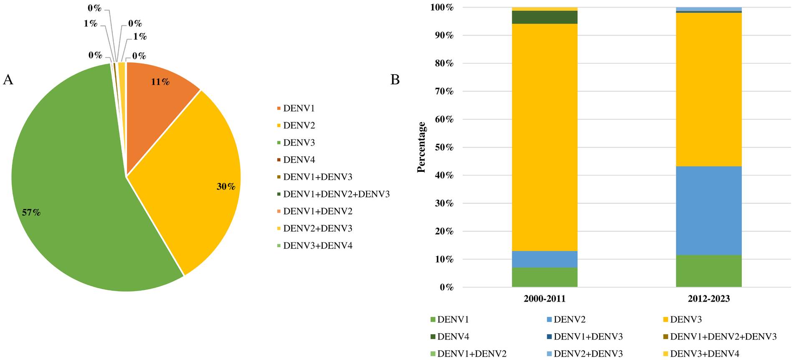

DỊCH TỄ HỌC • TRUYỀN NHIỄM & VI SINH • ICD-10: A90, A91
Dịch Tễ Học Sốt Xuất Huyết Dengue (DENV)
Tổng quan dịch tễ học toàn diện: Tam giác dịch tễ học tương tác, đặc tính sinh học 4 serotypes DENV, sinh thái véc-tơ muỗi Aedes, động học chu kỳ lây truyền, cơ chế sinh lý bệnh ADE và phân tích dịch tễ toàn cầu & Việt Nam.
Gánh Nặng Hàng Năm
390 Triệu
Số ca nhiễm vi rút ước tính toàn cầu (96M ca lâm sàng rõ rệt)
Kỷ Lục Dịch 2024 (WHO)
14,4 Triệu
14.434.584 ca mắc và 11.201 ca tử vong toàn cầu
Thời Kỳ Ủ Bệnh EIP
8 – 12 Ngày
Thời gian ủ bệnh ngoại lai trong tuyến nước bọt muỗi
Tâm Dịch Miền Nam (2026)
86,6%
Tỷ trọng ca mắc sốt xuất huyết tại miền Nam Việt Nam
1. Tam Giác Dịch Tễ Học và Hệ Sinh Thái Lây Truyền
Sốt xuất huyết Dengue (SXHD) được đặc trưng bởi tam giác dịch tễ học tương tác động giữa ba thành tố cốt lõi: Tác nhân gây bệnh (Vi rút DENV), Vật chủ nhạy cảm (Con người) và Môi trường & Trung gian truyền bệnh (Khí hậu, Sinh cảnh, Véc-tơ muỗi Aedes).
Dưới góc nhìn sinh thái học y khoa, SXHD là một hợp quần sinh học tương tác động. Bệnh được truyền từ người bệnh sang người lành thông qua muỗi véc-tơ trong một hệ sinh thái nhân văn chịu tác động mạnh mẽ bởi nhiệt độ, lượng mưa, mật độ đô thị hóa và tập quán sinh hoạt của con người.
SƠ ĐỒ TAM GIÁC DỊCH TỄ HỌC SỐT XUẤT HUYẾT DENGUE
Epidemiological Triad • CDC & WHO Model
2. Tác Nhân Gây Bệnh (DENV) & Sinh Lý Bệnh ADE
Đặc Điểm Cấu Trúc Di Truyền & Protein Vi Rút
Vi rút Dengue (DENV) thuộc họ Flaviviridae, chi Orthoflavivirus (trước đây là chi Flavivirus). Genome vi rút là một sợi đơn RNA cực dương (+)ssRNA dài khoảng 11 kb, mã hóa cho một đa protein duy nhất. Đa protein này được cắt bởi protease của tế bào chủ và vi rút thành:
3 protein cấu trúc: Capsid (C), màng (prM/M) và protein vỏ liên kết (E). Protein vỏ E đóng vai trò quyết định trong việc hình thành hạt vi rút, trưởng thành và gắn kết với thụ thể của tế bào vật chủ.
7 protein phi cấu trúc: NS1, NS2A, NS2B, NS3, NS4A, NS4B, NS5. Trong đó, protein NS1 tồn tại dưới dạng nội bào, bám màng và bài tiết ra ngoài huyết thanh. Nồng độ NS1 tăng cao trong máu trong giai đoạn cấp (ngày 1 – 5) là dấu ấn sinh học vàng cho xét nghiệm chẩn đoán sớm.
4 Typ Huyết Thanh (Serotypes) & Dòng Di Truyền
DENV gồm 4 typ huyết thanh riêng biệt (DEN-1, DEN-2, DEN-3, DEN-4) chia sẻ khoảng 65% genome. Mỗi typ huyết thanh lại phân nhánh thành nhiều dòng di truyền (genotypes) có độc lực và đặc tính dịch tễ khác nhau (ví dụ: DENV-3 gồm các genotype 3I, 3II, 3III, 3V).
Cơ Chế Sinh Lý Bệnh Cốt Lõi: Tăng Cường Phụ Thuộc Kháng Thể (ADE)
Nhiễm một typ huyết thanh DENV chỉ tạo miễn dịch bảo vệ suốt đời đối với chính typ đó. Đối với 3 typ còn lại, cơ thể chỉ có miễn dịch chéo ngắn hạn (khoảng 8 – 12 tháng). Khi tái nhiễm thứ phát với một typ huyết thanh khác, các kháng thể không trung hòa chéo gắn kết với vi rút mới nhưng không tiêu diệt được chúng. Ngược lại, phức hợp này tạo thuận lợi cho vi rút gắn vào thụ thể FcγR trên bề mặt đại thực bào, thúc đẩy vi rút xâm nhập và nhân lên ồ ạt.
Hiện tượng này kích hoạt giải phóng bão cytokine (TNF-α, IL-6, IL-8), gây tổn thương glycocalyx nội mạc mạch máu, dẫn đến tăng tính thấm thành mạch, thoát huyết tương ồ ạt, cô đặc máu (HCT tăng cao), giảm tiểu cầu nặng và sốc sốt xuất huyết (DSS).
3. Véc-tơ Truyền Bệnh (Muỗi Aedes aegypti & Aedes albopictus)
Sốt xuất huyết Dengue truyền sang người do muỗi cái thuộc chi Aedes đốt hút máu. Có 2 loài véc-tơ truyền bệnh chủ yếu với các đặc tính sinh học và sinh thái khác biệt:
Nguồn gốc châu Phi, thuần dưỡng hoàn hảo gần người (peri-domestic)
Bản địa Đông Nam Á, rừng nhiệt đới thích nghi ngoại ô & ôn đới
Tập tính đốt máu
Chuyên đốt người (anthropophilic), đốt ban ngày (sáng sớm & chiều tối), trú xó tối
Đốt tạp cả người và động vật (zoophagic), đốt ngoài trời
Nơi đẻ trứng
Dụng cụ chứa nước sạch nhân tạo (lu, bồn nước, lọ hoa, lốp xe phế thải)
Hốc cây, kẽ lá, gáo dừa ngoài tự nhiên và vật chứa nhân tạo
Sức đề kháng của trứng
Cực cao: chịu khô hạn lên đến 1 năm, nở ngay khi gặp nước
Chịu lạnh và khô hạn tốt, qua đông dạng trứng ở vùng ôn đới
Thời gian sống trung bình
Khoảng 30 ngày (4 tuần)
Khoảng 8 tuần (dài hơn Ae. aegypti)
Mở Rộng Địa Bàn Của Véc-tơ Do Biến Đổi Khí Hậu:
Khả năng chịu lạnh vượt trội giúp Aedes albopictus mở rộng nhanh chóng lên các vùng vĩ độ cao và ôn đới mát mẻ tại Nam Âu, Bắc Mỹ và Đông Á. Trong khi đó, Aedes aegypti chiếm ưu thế tuyệt đối tại các đô thị nhiệt đới mật độ cao nhờ tập tính bám sát nơi ở của con người.

Hình 1: Bản đồ phù hợp sinh cảnh đối với sự phân bố toàn cầu của véc-tơ Aedes aegypti (vàng), Aedes albopictus (xanh dương) và vùng đồng lưu hành cả hai loài (đỏ). (Nguồn: Ministry of Health Timor-Leste, 2022)
4. Chu Kỳ Lây Truyền & Động Học Ủ Bệnh (Transmission Cycle)
Chu kỳ lây truyền vi rút Dengue khép kín qua lại giữa người và muỗi tuân theo trục thời gian sinh học nghiêm ngặt:
SƠ ĐỒ ĐỘNG HỌC CHU KỲ LÂY TRUYỀN VÀ CÁC THỜI KỲ Ủ BỆNH DENV
Transmission Dynamics & Incubation Periods
Đường Lây Truyền Dọc (Vertical & Transovarial Transmission):
Mẹ sang con: Lây truyền qua nhau thai hoặc quanh thời điểm sinh nở khi người mẹ mắc bệnh giai đoạn cấp gần ngày sinh.
Qua trứng muỗi (Transovarial): Muỗi cái truyền vi rút sang trứng, giúp vi rút duy trì tồn tại trong quần thể muỗi qua mùa khô hạn kéo dài hàng tháng trước khi mùa mưa kế tiếp bắt đầu.
5. Vật Chủ Nhạy Cảm & Nhóm Nguy Cơ Cao
Mọi cá thể ở mọi lứa tuổi và giới tính chưa có miễn dịch bảo vệ đều có thể mắc bệnh khi bị muỗi mang vi rút đốt.
Sự Dịch Chuyển Nhóm Tuổi Mắc Bệnh (Paradigm Shift)
Trước đây, tại các vùng lưu hành dịch lâu năm (như Đông Nam Á), trẻ em là đối tượng chịu gánh nặng bệnh tật cao nhất do tỷ lệ nhiễm trùng thứ phát lớn. Tuy nhiên, những năm gần đây ghi nhận xu hướng dịch chuyển rõ rệt với tỷ lệ mắc tăng vọt ở nhóm thanh thiếu niên và người lớn. Ngược lại, tại các quốc gia không lưu hành dịch tự nhiên (như Trung Quốc), bệnh gặp ở mọi lứa tuổi nhưng tập trung nhiều nhất ở độ tuổi lao động từ 20 đến 50 tuổi.
Đối Tượng Nguy Cơ Cao Diễn Tiến Nặng & Tử Vong:
Trẻ nhũ nhi (< 12 tháng tuổi): Do thành mạch mỏng manh và kháng thể truyền từ mẹ suy giảm tạo điều kiện thuận lợi cho cơ chế ADE.
Phụ nữ mang thai: Tăng nguy cơ sảy thai, sinh non, băng huyết chu phẫu và lây truyền dọc cho thai nhi.
Người cao tuổi (≥ 60 tuổi): Dự trữ sinh lý suy giảm, xơ cứng mạch máu và đáp ứng miễn dịch lão hóa.
Người béo phì / Thừa cân: Thể tích phân bố thay đổi, nguy cơ suy hô hấp do tràn dịch màng phổi/màng bụng nặng nề hơn.
Bệnh mạn tính phối hợp: Đái tháo đường, tăng huyết áp, bệnh mạch vành, bệnh thận mạn, hen/COPD, loét dạ dày tá tràng (nguy cơ xuất huyết tiêu hóa ồ ạt).
6. Động Lực Sinh Thái, Khí Hậu & Yếu Tố Xã Hội
Sự lây lan và phân bố dịch tễ học SXHD chịu sự chi phối chặt chẽ bởi các yếu tố tự nhiên và xã hội:
Nhiệt độ môi trường: Nhiệt độ tối ưu cho sự phát triển của muỗi Aedes là 16°C đến 30°C (giới hạn sinh tồn: 14°C – 40°C). Nhiệt độ cao trong mùa hè rút ngắn thời kỳ ủ bệnh ngoại lai (EIP) trong cơ thể muỗi, làm tăng tần suất đốt người và đẩy nhanh tốc độ bùng phát dịch.
Lượng mưa & Độ ẩm: Lượng mưa vừa phải tạo ra hàng triệu vi sinh cảnh nước đọng. Độ ẩm lý tưởng (60% – 80%) kéo dài tuổi thọ muỗi trưởng thành.
Hiện tượng El Niño & Biến đổi khí hậu: Khiến các đợt nắng nóng kéo dài xen kẽ mưa lũ cục bộ, mở rộng vùng phân bố của véc-tơ lên các vùng núi cao (như Nepal) và các vùng cận nhiệt đới ôn đới.
Đô thị hóa tự phát & Rác thải rắn: Mật độ dân cư quá tải, thiếu nước máy ổn định dẫn đến tập quán trữ nước trong lu vại không đậy kín, cùng hệ thống rác thải nhựa/lốp xe đọng nước là nguồn sản sinh bọ gậy khổng lồ.
Giao thương & Du lịch hàng không: Cho phép vi rút và véc-tơ phát tán liên lục địa chỉ trong vòng 24 giờ.
7. Tình Hình Dịch Tễ Học Toàn Cầu, Việt Nam & Quốc Gia Lân Cận
Tình Hình Toàn Cầu — Năm Dịch Lịch Sử 2024
Trong hơn hai thập kỷ qua, số ca sốt xuất huyết báo cáo về WHO đã tăng hơn 8 lần (từ 505.430 ca năm 2000 lên 5,2 triệu ca năm 2019).
Năm 2024 là năm dịch lịch sử kỷ lục với 14.434.584 ca mắc và 11.201 ca tử vong trên cả 6 khu vực của WHO:
Khu vực châu Mỹ: Gánh chịu hơn 90% số ca toàn cầu với 13.063.434 ca mắc và 8.431 ca tử vong. Brazil là tâm dịch thảm khốc nhất (hơn 10,2 triệu ca mắc, 6.321 tử vong).
Khu vực Đông Nam Á: Ghi nhận 798.690 ca mắc và 2.400 ca tử vong. Trong đó Indonesia (257.271 ca, 1.461 tử vong), Ấn Độ (232.425 ca, 233 tử vong) và Thái Lan (104.681 ca, 87 tử vong).
Xu hướng năm 2025: Trong 7 tháng đầu năm 2025 tiếp tục ghi nhận hơn 4 triệu ca mắc tại 97 quốc gia.
Tình Hình Dịch Tễ Học Tại Việt Nam
Ca bệnh SXHD đầu tiên được ghi nhận tại Đà Nẵng năm 1958. Bệnh lưu hành quanh năm trên toàn quốc, thường tạo đỉnh dịch lớn vào mùa mưa từ tháng 7 đến tháng 10.
Phân bố vùng miền: Miền Nam là vùng chịu gánh nặng dịch tễ nặng nề nhất. Thống kê lịch sử cho thấy tỷ lệ mắc/100.000 dân cao nhất tại Đồng bằng sông Cửu Long (213,4 ca) và Đông Nam Bộ (144,7 ca), trong khi vùng Tây Bắc có tỷ lệ thấp nhất (0,1 ca).
Dữ liệu 2024 & Đầu 2026: Năm 2024 cả nước ghi nhận 108.433 ca mắc và 26 ca tử vong. Tính đến ngày 06/03/2026, cả nước đã ghi nhận 27.365 ca mắc (tăng gấp đôi cùng kỳ 2025), trong đó khu vực miền Nam chiếm tới 86,6% tổng số ca mắc.
Động thái Serotypes: Sự đồng lưu hành của cả 4 typ huyết thanh (DENV-1, 2, 3, 4) tạo nên tình trạng hyperendemic phức tạp và nguy cơ bùng phát ca nặng do ADE.
Đặc Điểm Dịch Tễ Tại Các Quốc Gia Lân Cận
Trung Quốc (Non-endemic): Nguồn lây chủ yếu là ca nhập cảnh quanh năm từ Đông Nam Á gây dịch cục bộ vào hè – thu. Đỉnh dịch lịch sử năm 2014 ghi nhận 46.105 ca tại Quảng Đông. Năm 2024 ghi nhận 24.330 ca và năm 2025 ghi nhận 10.007 ca. Đỉnh dịch tập trung vào tháng 10.

Hình 2: Xu hướng động thái số ca mắc Sốt xuất huyết Dengue nội địa (Indigenous - xanh dương) và nhập cảnh (Imported - cam) tại Trung Quốc giai đoạn 2005–2024 theo thang log10. (Nguồn: He S. et al., Virol Sin 2026)
Bangladesh (Đe dọa khẩn cấp): Giai đoạn 2000 – 2024 ghi nhận 565.438 ca mắc và 2.587 ca tử vong. Đỉnh dịch thảm họa năm 2023 lên tới 321.179 ca mắc và 1.705 ca tử vong. Về động thái chủng, DENV-3 chiếm ưu thế áp đảo (57%), tiếp theo là DENV-2 (30%), DENV-1 (11%).

Hình 3: Phân bố tỷ lệ các typ huyết thanh DENV lưu hành tại Bangladesh: (A) Tỷ lệ gộp toàn giai đoạn với ưu thế DENV-3 (57%); (B) Sự dịch chuyển typ huyết thanh giữa hai thời kỳ 2000–2011 và 2012–2023. (Nguồn: Sharif N. et al., Front Microbiol 2024)